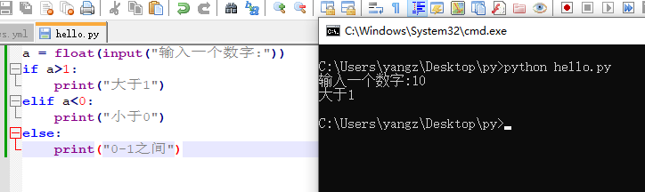

Example 3(tarnslated by ChatGPT summary)
AI Summary powered by ChatGPT
[[START]] Until now, everything we've learned can be solved in one sentence. Whether it's function calls, variable assignments, or creating objects.
Next, we're going to learn logical blocks composed of multiple lines. To learn this content, we first introduce another important syntax in python — indentation (this is also one of the most common mistakes for newcomers)
Indentation
In python scripts, indentation has syntactic meaning, and it includes the logical structure of the code. Code with the same indentation is at the same level, the more indentation, the deeper the code level.
For example:
Regardless of how the def function is used, by looking at these two lines of code we can tell that #!python print("hi") and #!python print("hello world") both belong to the code inside def. And if we remove one of the indentations, the meaning of the code will be completely different:
It's not hard to understand that this code #!python print("hi") is the subcode inside def, while #!python print("hello world") and def are at the same level.
After understanding the meaning of indentation, let's learn how to indent. There are two common types of indentation:
- tab party
- space party
This is like the salty and sweet fans of tofu pudding, each has its supporters. I will only introduce the spacing method here. Theoretically, any number of spaces is legal indentation:
But according to PEP8 (Python Enhancement Proposal 8), we recommend using four spaces as one level of indentation.
User-defined functions
def
The format of the user-defined function has appeared in the previous text several times. Here is a more complex version:
We need to declare our function first with the def keyword, then a space, followed by the function's name and double brackets (). Inside the brackets, we write the parameters that the function can accept, and there can be multiple parameters.
Parameters can be used as variables within the function. When the function is called, the entered values are assigned to the corresponding variables and then all the contents of the function are executed in order. Please note that the space inside the function and the space outside are different namespaces, and the variables are not universal. Generally speaking, the inside can access the external variables, but the outside cannot access the internal variables.
Finally, use the return keyword to declare the return value of the function. After the function ends, this value will be returned. If there is no return statement, None will be returned, indicating that there is no return value.
The way to call a function is (), readers should be very familiar with it. And there are many ways to pass parameters to the function:
- Pass by position order:
f(1, 4)is this usage - Pass by name:
f(a=1, b=4)This usage ignores position, e.g.:f(b=4, a=1) - Mixed:
f(1, b=3)Not recommended
Generally speaking, as long as it does not cause ambiguity, parameters can be passed in the order of positions.
lambda
Previous articles have also mentioned the existence of unnamed functions, and now we will introduce this so-called anonymous function.
The definition of an anonymous function is lambda parameter : return value, for example,
It will return a function that adds 2 to a number, and we can call this function directly:
Please note that the brackets in
(lambda x : x+2)represent a logical priority. Firstly execute thelambdastatement to get a function object and then call it. This is similar to the round brackets in maths.
If you assign an anonymous function to a variable, then it can be used as a normal function:
Due to the simplicity of the anonymous function, we often use it as a parameter to pass to other functions:
This also shows the representation of imaginary numbers in python:
1j. Please note that you cannot replace1jwithj, and0and0jare also not exactly the same. The former is an integer object and the latter is a complex object.
We will introduce more abundant function theories in the module of functional programming in advanced grammar.
User-defined classes
Process from class to object
The format of the user-defined class has also appeared in previous articles. Now let's add a __new__ method to make the logic more comprehensive:
+= syntactic sugar
Careful readers will find that a symbol that has never been introduced before, +=, is used in the code above. In fact, this is one of python's syntactic sugars:
- Abbreviation:
a += b - Equivalent writing:
a = a + b
Similarly, we also have *= , /= , -= , //= and %= .
Take this opportunity to supplement some previously missed content related to operators. In fact, these contents are relatively in line with daily use habits, so there is no need to waste too much ink:
+: Addition operator, can also be a unary operator-: Subtraction operator, can also be a unary operator/: Division operator*: Multiplication operator%: Modulo operator**: Power operator//: Floor division operator, equivalent to division and then rounding down
First, look at the grammar. There are two levels of indentation involved here. The first level of indentation is under the class keyword, which represents the interior of class definition. The second level of indentation is under the def keyword, which represents the interior of class methods.
Next, pay attention that when defining the __new__ method, we used a parameter cls, which is a parameter that python automatically passes in when creating an object. It represents the class to be created. The parameters of the class methods after the object is created can use a parameter self. This self parameter does not need to be passed when the method is actually called. Python will pass the object itself as the value of self. The positions and names of these two parameters are immutable. In addition, similar to the namespace inside functions, the namespace inside the class is also independent from the outside world.
Moreover, the return value of __init__ function must be None, and the return value of __new__ is super().__new__(cls), which is to call the __new__ method of the superclass (or parent class), and create a new object of cls class.
If you do not specify to inherit a class, then the class created by python will automatically inherit from the
objectclass, and the return value ofsuper()is this inherited parent class.
Finally, from the output results, we can easily know the running process of the code:
- Ran the
__new__method and created an instance of theTeacherclass. - Ran the
__init__method and initialized itsage - In
#! wang = Teacher(20), the__init__method was called, and theageattribute ofwangwas assigned to20. - Printed the
ageattribute ofwang. - Updated the age.
- Printed the
ageattribute ofwangafter the update.
Inheritance of classes
This concept has been mentioned before. For convenience, sometimes we need a certain class to have all the attributes of another class, and then we can use class inheritance to achieve this. Here is a classic style:
In the above code example, the teacher class inherits from the human class (expressed as Teacher(Person)), but the teacher has one more attribute than humans: the course taught.
So we need to define the initialization function of the teacher class. But we don't want to write it all over again. So, we initially called the initialization function of the parent class: super(Teacher, self).__init__ to complete the initialization content defined by the parent class, and then further initialized.
We can also know this process from the content of the printed text:
- First printed:
create a person with age 20. This is the process defined in the parent class. - Then printed:
seet lesson as math. This is the process defined in the subclass.
So far, the basic knowledge of the class has been introduced. The class is one of the most important, profound, and difficult contents in python and needs to be well understood. The above codes are all classic styles, and readers can follow these styles for practice.
We will introduce more class programming techniques in the Module of Object-Oriented Programming in the advanced tutorial.
if Conditional Statement
Boolean expressions
Before explaining the if conditional statement, we need to understand the Boolean (bool) expressions first.
bool is a class in python, which has only two values: True and False
According to the help document: The builtins True and False are the only two instances of the class bool.
These two values represent truth and falsehood, which are similar to the true and false propositions in maths.
The so-called Boolean expression refers to an equation whose result is a Boolean value, such as:
1 == 21 < 21 is Noneany(...)andall(...)
And so on.
Logical operators
The following logical operators are common in Boolean expressions:
is: Judge whether two objects are the same objectnot: Taking the oppositein: Determine whether it belongs toand: Take the sumor: Take or><=>=<=!=`: The last one is unequal, the others can be understood according to semantics
In fact, you can type help("&") in python to get related information:
All operators
The structure of if statement
Armed with the understanding of Boolean expressions, we can then write if conditional statements:
If you know that elif is an abbreviation for else if, then it is basically natural language. Nothing much to say.
if and elif must be followed by a Boolean expression, and then judge one by one. If it does not meet the requirements, enter the next option. If it meets, end this logical block. Before writing the if statement, you need to clarify the logical relationship. Knowing which to judge first and which to judge later is very important. If the above statement is changed to:
Although the results are correct, theoretically, it will be much slower than the previous writing because judging whether a>1 can filter out half of the values on the number line, while judging 0 <= a <= 1 can only filter out the values between [0,1] on the number line. Which is better and which is inferior can be judged.
Learn about the situation in other languages
The if conditional statement is probably in any one programming language, but elif is probably a specialty of python, because it comes with python's indentation.
Look, without elif, every time you want to use else if under python's indentation system, you need to indent it once. Once the logical structure is complex, the indentation will be very headache.
Other languages (C and a bunch of programming languages with similar C syntaxes) all have this pattern:
I guess there is no need for elif.
What would be primarily addressed here is the input function, which can retrieve user input:

This function can be said to offer limitless possibilities for interaction.
Compact if statement
Sometimes if statements can be written in a compact form that is only one line long:
copy from https://yangzhang.site/Python/BasicSyntax/builtin_keyword/, please check raw
.mdfile.
Quote
[[START]] 到目前为止，我们所学的内容都是一句话可以解决的。不论是函数调用，还是变量赋值抑或是创建对象。
接下来我们就要学习多行组成的逻辑块。为了学习这个内容，我们先要介绍python中另外一个重要的文法——缩进（这也是新人最出错的地方之一）
缩进
在python的脚本中，缩进是有语法涵义的，它蕴含了代码的逻辑结构。缩进规格相同的代码处于同一层级，缩进越多代码层级越深。
例如：
def hello():
print("hi")
print("hello world")
def的用法如何，但看这两行代码我们就能知道#!python print("hi")和#!python print("hello world")是同属于def内部的代码。而如果去掉其中一个缩进，代码的意味就完全不同了：
def hello():
print("hi")
print("hello world")
#!python print("hi")是def内部的子代码，而#!python print("hello world")和def处在同一层次。
了解了缩进的意义之后，我们来学习缩进的方法。常见的缩进方法有两类：
- tab党
- space党
这就好比豆腐脑儿的咸甜党，各有人拥护。我这里只介绍space，也就是空格的缩进方法。理论上不论是多少个空格都是合法的缩进：
def hello():
print("hi")
def hello():
print("hi")
def hello():
print("hi")
def hello():
print("hi")
但是按照PEP8（Python Enhancement Proposal 8）的建议，我们推荐使用4个空格来作为一层缩进。
自定义函数
def
自定义函数的格式前文已经多次出现了，这里给出一个更加复杂的版本：
def f(a, b):
print(a, b)
return a + b
print(f(2, 1)) ## 返回值为3
print(f(1, 4)) ## 返回值为5
def关键字来声明，然后空格，写下函数的名字和双括号()，在括号内写函数可以传入的参数，参数可以有多个。
参数可以作为函数内部的变量来使用，在函数被调用的时候会把传入的值赋值给对应的变量然后依次执行函数中所有的内容。请注意，函数内部的空间和外部的空间是不同的命名空间，变量并不通用。一般来说内部可以访问外部的变量，但是外部不可以访问内部的变量。
最后用return关键字来声明函数的返回值，函数结束之后就会返回这个值。如果没有return语句，就会返回一个None，代表没有返回值。
函数调用的方式是()，读者应该以及很熟悉。而函数传递参数的方式有很多种：
- 按照位置顺序传递：
f(1, 4)就是这种用法 - 按照名字传递：
f(a=1, b=4)这种用法可以无视位置，例如：f(b=4, a=1) - 混合：
f(1, b=3)不推荐
一般而言不引起歧义的时候都可以按照位置顺序来传递参数。
lambda
之前的文章中也提到过存在没有名字的函数，这里我们就来介绍一下所谓的匿名函数。
匿名函数的定义方式为lambda parameter : return value，例如
lambda x : x+2
(lambda x : x+2)(3)
# 返回值是5
注意到上面的
(lambda x : x+2)里的括号代表一种逻辑优先级，先执行lambda语句得到一个函数对象然后再调用，这和数学中的圆括号是类似的。
而如果把匿名函数赋值给一个变量，那么就可以当作正常的函数来使用：
add = lambda x,y : x+y
print(add(1, 2)) ## 打印出来的是3
l = [1j, 2j+3, 1j, 3j+1]
l.sort(key = lambda x:x.real)
print(l) # 输出的值为 [1j, 1j, (1+3j), (3+2j)]
这里也展示了python中虚数的表示方法：
1j，请注意不能用j代替1j，并且0和0j也不完全相同，前者是整数对象，后者是复数对象。
更加丰富的函数理论我们会在高级语法的函数式编程模块中介绍。
自定义类
从类到对象的过程
自定义类的格式之前的文章也出现过，下面我们加上一个__new__方法，让逻辑更加完整：
class Teacher:
"""老师类"""
def __new__(cls, age): ## 一般而言这个方法可以省略
print("new")
return super().__new__(cls)
def __init__(self, age): ## 如果需要初始化对象，这个方法不可省略
print("init")
self.age = age
def update_age(self):
print("update age")
self.age += 1
wang = Teacher(20)
print("老师现在的年龄: ", wang.age)
wang.update_age()
print("老师明年的年龄: ", wang.age)
new
init
老师现在的年龄: 20
update age
老师明年的年龄: 21
+=语法糖
细心的读者会发现，上面的代码中使用了一个从未介绍过的符号+=。实际上这是python的语法糖之一：
- 简写：
a += b - 等价写法：
a = a + b
类似的我们还有*=，/=，-=，//=和%=。
借此机会补充一下之前漏掉的运算符相关内容。实际上这些内容比较符合日常使用习惯，所以也不必浪费太多笔墨：
+：加法运算符，也可以作为一元运算符-：减法运算符，也可以作为一元运算符/：除法运算符*：乘法运算符%：模运算符**：乘方运算符//：地板除运算符，等价于除法然后向下取整
首先看文法，这里涉及到了两层缩进。第一层缩进是class关键字下方，代表类定义的内部。第二层缩进是def关键字下方，代表类方法的内部。
其次注意到，我们定义__new__方法的时候使用了一个参数cls，它是python在创建对象的时候自动传入的参数，代表要创建的类。对象创建完毕后的类方法都可以使用一个参数self，这个self参数在实际方法调用的时候无需传递，python会把对象本身作为self的值传递进来。这两个参数的位置和名称都是不可变动的。另外和函数内部命名空间类似，类内部的命名空间也是自成一体的，和外部相对独立。
再次，__init__函数的返回值必须是None，而__new__的返回值为super().__new__(cls)，实际上就是调用了超类（或者叫父类）的__new__方法，新建了一个cls类的对象。
如果不指定继承某个类，那么python新建的类会自动继承自
object类，而super()的返回值就是这个被继承的父类
最后我们通过输出的结果不难得知代码的运行过程：
- 运行了
__new__方法，创建了Teacher类的一个实例 - 运行了
__init__方法，初始化它的age - 在
#! wang = Teacher(20)中就调用了__init__方法，把wang的age属性赋值为20 - 打印了
wang的age属性 - 更新了年龄
- 打印了更新后
wang的age属性
类的继承
之前也提过这个概念，方便起见我们有时需要让某个类具有另外一个类的全部属性，那么就可以用类的继承来实现。例如下面的经典写法：
class Person:
"""人类"""
def __init__(self, age):
print("create a person with age ", age)
self.age = age
def update_age(self):
print("update age")
self.age += 1
class Teacher(Person): ## 继承关系用()来表示
"""老师类"""
def __init__(self, age, lesson):
super(Teacher, self).__init__(age)
print("set lesson as ", lesson)
self.lesson = lesson
wang = Teacher(20, 'math')
print("老师现在的年龄：", wang.age)
print("老师教授的科目：", wang.lesson)
wang.update_age()
print("老师明年的年龄：", wang.age)
create a person with age 20
seet lesson as math
老师现在的年龄： 20
老师教授的科目： math
update age
老师明年的年龄： 21
上面的代码示例中，老师类继承了人类（表示方法为Teacher(Person)），但是老师比人多出来一个属性：教授的课程。
于是我们需要定义老师类的初始化函数。但是又懒得完全重新写一次，于是先调用了父类的初始化函数：super(Teacher, self).__init__，完成父类定义的初始化内容，然后再进行进一步的初始化。
这个过程通过打印出来的文字内容也可以获悉：
- 先打印了：
create a person with age 20，这是父类中定义的过程 - 然后打印了：
seet lesson as math，这是子类中定义的过程
至此，较为基础的类的知识就介绍完成了。类是python中最重要也是最深刻、最困难的内容之一，需要好好理解。上面的代码都是经典的写法，读者可以效仿这些写法进行练习。
更多的类编程的技术我们会在高级教程的面向对象编程模块介绍。
if条件语句
布尔表达式
在讲解if条件语句之前，我们得先来了解布尔（bool）表达式。
bool是python中的一个类，他有且仅有两个值：True和False
help文档中的说法是：The builtins True and False are the only two instances of the class bool.
这两个值分别代表真伪，这就类似于数学中的真假命题。
所谓的布尔表达式指的是结果为布尔值的算式，例如：
1 == 21 < 21 is Noneany(...)和all(...)
等等。
逻辑运算符
在布尔表达式中常见以下的逻辑运算符：
is：判断两个对象是否为同一个对象not：取否in：判断是否属于and：取和or：取或><=>=<=!=：最后一个是不等于，其他按照语义理解即可
实际上你可以在python中输入help("&")来获取相关信息：
所有的operator
+-------------------------------------------------+---------------------------------------+
| Operator | Description |
|=================================================|=======================================|
| "(expressions...)", "[expressions...]", "{key: | Binding or parenthesized expression, |
| value...}", "{expressions...}" | list display, dictionary display, set |
| | display |
+-------------------------------------------------+---------------------------------------+
| "x[index]", "x[index:index]", | Subscription, slicing, call, |
| "x(arguments...)", "x.attribute" | attribute reference |
+-------------------------------------------------+---------------------------------------+
| "await x" | Await expression |
+-------------------------------------------------+---------------------------------------+
| "**" | Exponentiation [5] |
+-------------------------------------------------+---------------------------------------+
| "+x", "-x", "~x" | Positive, negative, bitwise NOT |
+-------------------------------------------------+---------------------------------------+
| "*", "@", "/", "//", "%" | Multiplication, matrix |
| | multiplication, division, floor |
| | division, remainder [6] |
+-------------------------------------------------+---------------------------------------+
| "+", "-" | Addition and subtraction |
+-------------------------------------------------+---------------------------------------+
| "<<", ">>" | Shifts |
+-------------------------------------------------+---------------------------------------+
| "&" | Bitwise AND |
+-------------------------------------------------+---------------------------------------+
| "^" | Bitwise XOR |
+-------------------------------------------------+---------------------------------------+
| "|" | Bitwise OR |
+-------------------------------------------------+---------------------------------------+
| "in", "not in", "is", "is not", "<", "<=", ">", | Comparisons, including membership |
| ">=", "!=", "==" | tests and identity tests |
+-------------------------------------------------+---------------------------------------+
| "not x" | Boolean NOT |
+-------------------------------------------------+---------------------------------------+
| "and" | Boolean AND |
+-------------------------------------------------+---------------------------------------+
| "or" | Boolean OR |
+-------------------------------------------------+---------------------------------------+
| "if" – "else" | Conditional expression |
+-------------------------------------------------+---------------------------------------+
| "lambda" | Lambda expression |
+-------------------------------------------------+---------------------------------------+
| ":=" | Assignment expression |
+-------------------------------------------------+---------------------------------------+
if语句的结构
了解了布尔表达式之后我们就可以来写if条件语句了：
a = float(input("输入一个数字："))
if a>1:
print("大于1")
elif a<0:
print("小于0")
else:
print("0-1之间")
elif就是else if的简写，那基本就是自然语言了，没啥好说的。
if和elif后面需要跟着一个布尔表达式，然后就是挨个判断，如果不满足就进入下一个选项，如果满足就结束掉这个逻辑块。写if语句之前需要理清楚逻辑关系，先判断哪个后判断哪个很重要。如果把上面的语句改成：
if a>=0 and a<=1:
print("[0,1]")
elif a>1:
print(">1")
else:
print("<1")
a>1与否可以过滤掉数轴上一半的值，而判断0<=a<=1则只能过滤掉数轴上[0,1]的值，孰优孰劣高下立判。
了解一下其他语言的情况
if条件句大概是任何一门编程语言都有的，但是elif大概是python的特产，因为它是python的缩进带来的。
if a:
pass
else:
if b:
pass
else:
if c:
pass
else:
pass
elif在python的缩进体系下，每次想使用else if都需要缩进一次，一旦逻辑结构比较复杂，缩进就非常让人头疼了。
其他语言（C和类C语法的一大堆编程语言）都是这种造型：
if( x == 10 ){
System.out.print("Value of X is 10");
}else if( x == 20 ){
System.out.print("Value of X is 20");
}else if( x == 30 ){
System.out.print("Value of X is 30");
}else{
System.out.print("这是 else 语句");
}
elif了。
这里主要来介绍一下input函数，它可以获取用户的输入：
可以说这个函数提供了无穷的可玩性。
紧凑型的if语句
某些时候if语句可以写成只有一行的紧凑形式：
abs_of = lambda x: x if x>0 else -x